Computer Vision Fundamentals
Implementation of some key concepts and the main algorithms of digital image processing and computer vision from scratch.
-
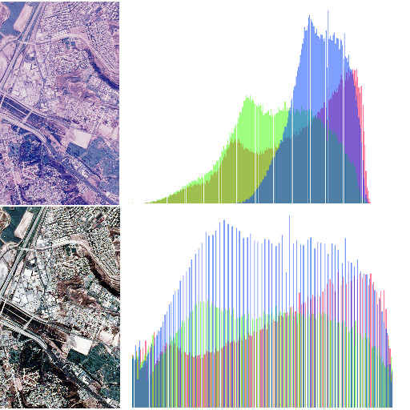
Auto Color Adjustment
Methods which provide color adjustment without input parameters.
view notebook -
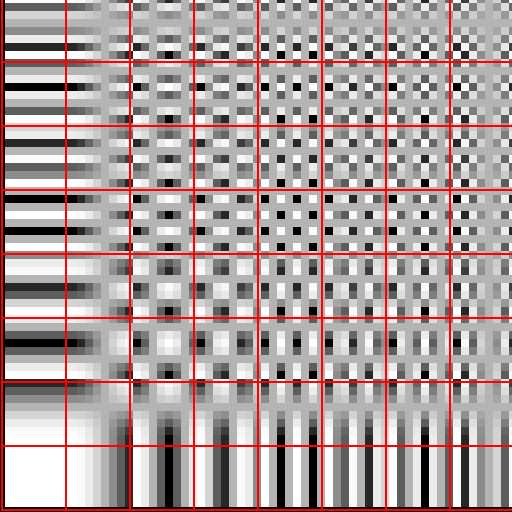
Bi-dimensional Discrete Cosine Transform
Overview and implementation of bi-dimensional discrete space cosine transform.
view notebook -
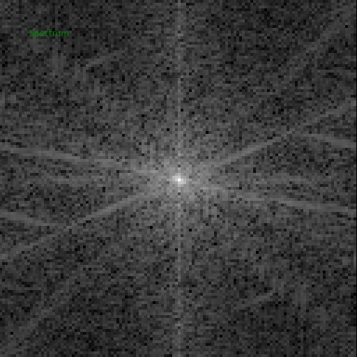
Bi-dimensional Discrete Fourier Transform
Overview and implementation of bi-dimensional discrete space Fourier transform.
view notebook -
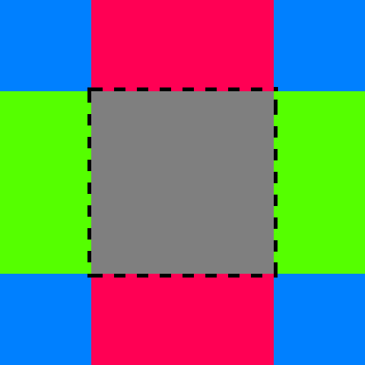
Border Padding
Bi-dimensional image padding for spatial filtering and convolution.
view notebook -
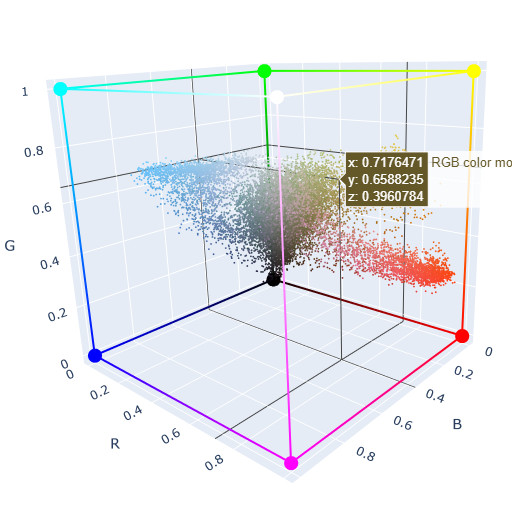
Color Models
A brief overview of the main color models with interactive visualization.
view notebook -
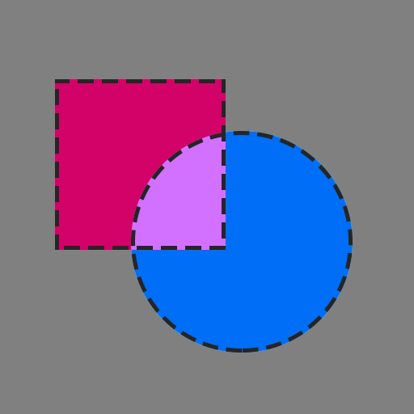
Compositing Operators
Methods for combining and mixing images.
view notebook -
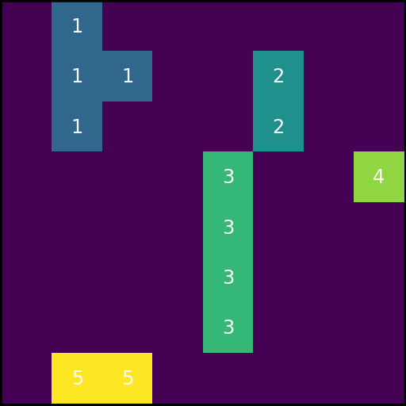
Connected-element Analysis
Find and label bi-dimensional subsets of connected elements.
view notebook -
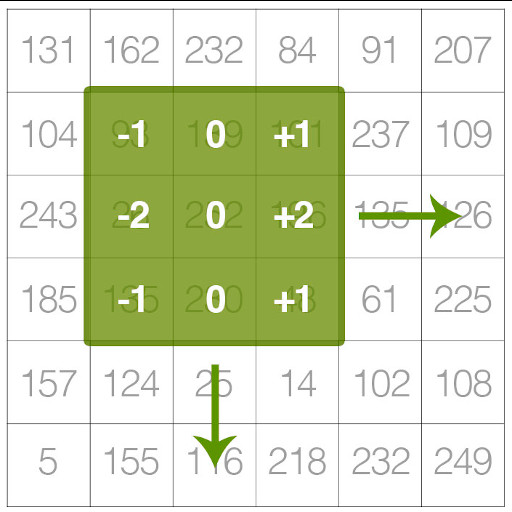
Discrete Convolution
Naive implementation of bi-dimensional discrete convolution.
view notebook -
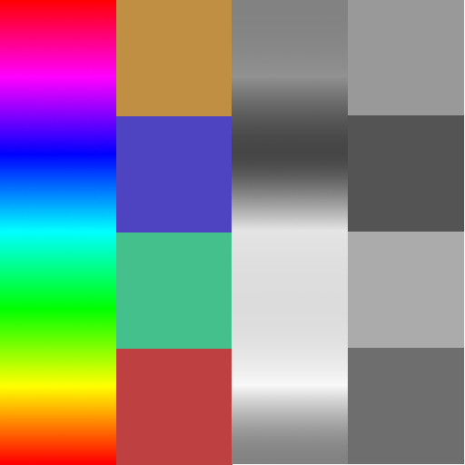
Grayscale conversion
Color image conversion methods from RGB to grayscale.
view notebook -
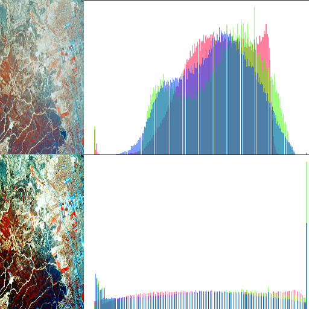
Histogram Equalization
Histogram equalization concept and algorithm applied to digital image color processing.
view notebook -
Image Stacking
Implementation of solution to image stacking and statistical blending.
view notebook -

Python Image Libraries
Brief overview about some of the main python libraries which promote input and output of digital image files.
view notebook -
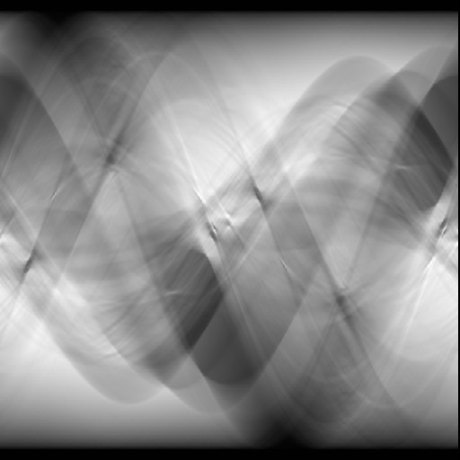
Radon Transform
Overview and implementation of discrete Radon transform.
view notebook -
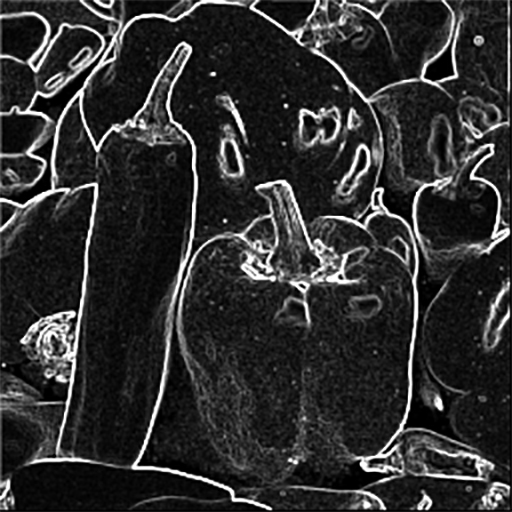
Sobel operator
Sobel and gradient operation with spatial filtering.
view notebook -
Thresholding
Methods for image binarization.
view notebook
Computer Vision Experiments
Practical experiments and applications in computer vision.
-
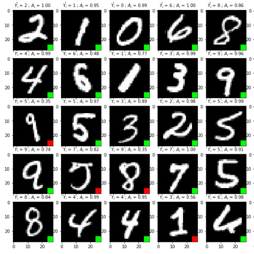
MNIST Classification
Digit classification using Shallow Neural Network and Convolutional Neural Network.
view notebook -
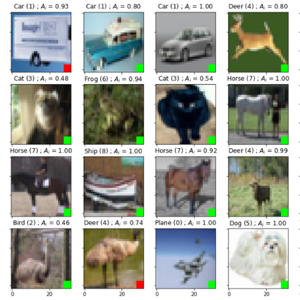
Cifar-10 Classification
Image classification using Convolutional Neural Network and Cifar-10 dataset.
view notebook -
YOLOv3 Object Detection
Object detection with YOLOv3 and OpenCV.
view notebook
Mathematical Foundations
Main mathematical concepts and numerical methods applied to Machine Learning.
-
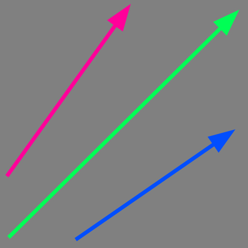
Linear Algebra - Vectors
Linear Algebra topic about Vectors.
view notebook -
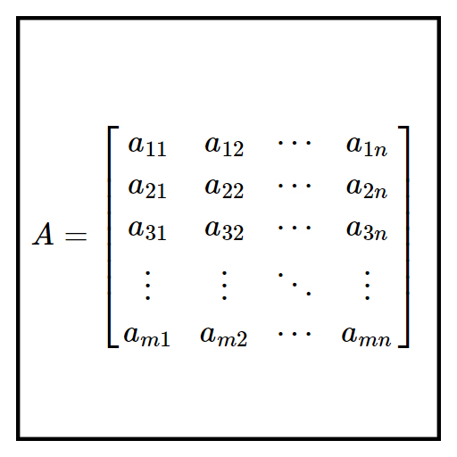
Linear Algebra - Matrices
Linear Algebra topic about Matrices.
view notebook -
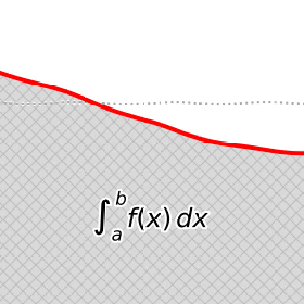
Numerical Integration
Overview and implementation of some numerical methods for definite integration.
view notebook -
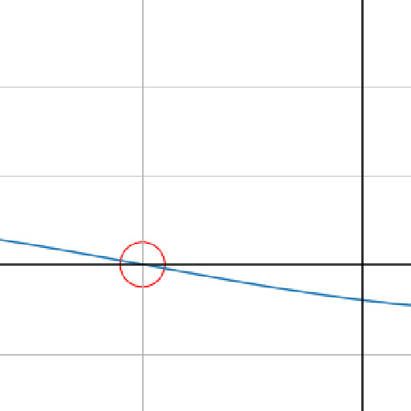
Numerical Root Finding
Overview and implementation of some numerical methods for root finding.
view notebook -
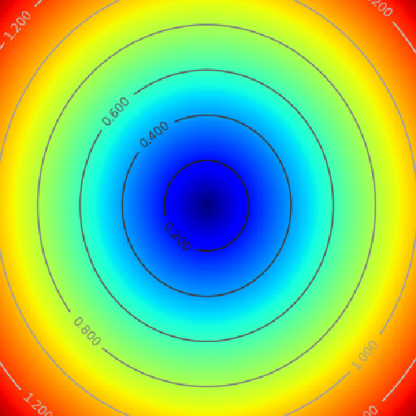
Dissimilarity Measure
Overview about dissimilarity and distance measure.
view notebook
Computer Graphics
Demonstrations and studies involving some quite important topics about computer graphics.
-
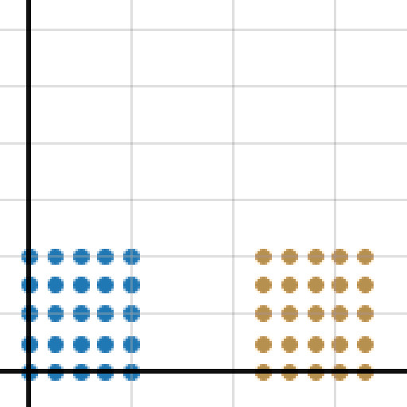
2D Transformation Matrices
Overview and application of bi-dimensional transformation matrices.
view notebook -
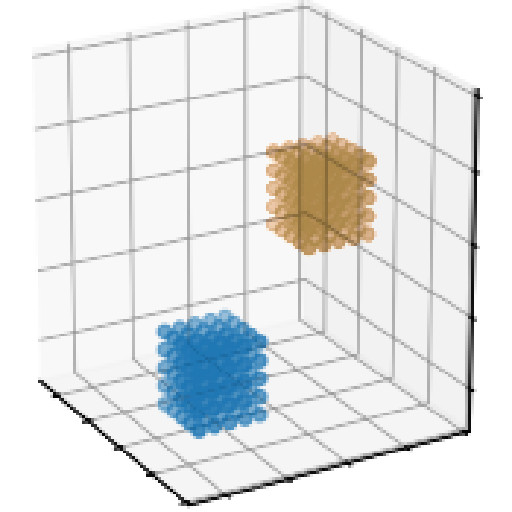
3D Transformation Matrices
Overview and application of tri-dimensional transformation matrices.
view notebook -
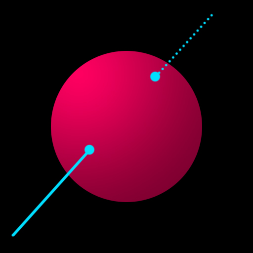
Ray-Sphere Intersection
Implementation of ray-sphere intersection algorithm.
view notebook
Digital Signal Processing
Implementation of key concepts and the main algorithms of digital signal processing.
-
Python Audio Libraries
Brief overview about some of the main python libraries which promote input and output of digital audio files.
view notebook -
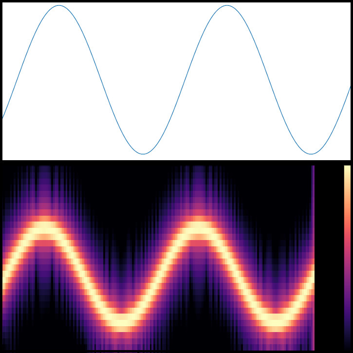
Instantaneous frequency
Analytical approach to continuous Instantaneous Frequency and Frequency Modulation.
view notebook -
![Signal Discontinuity [naive]](images/thumb_signal_discontinuity_naive.jpg)
Signal Discontinuity [naive]
Naive solution to solve the frequency discontinuity between two concatenated signals.
view notebook -
Sinusoidal periodic waveform
Overview about sinusoidal periodic waveform or sine wave function.
view notebook -
Non-sinusoidal periodic waveforms
Overview about non-sinusoidal periodic waveforms.
view notebook -
Noise colors
Overview and implementing of noise function focused on its power spectrum.
view notebook
High Performance Computing
Practices over high performance computing subjects such as parallel computing, gpu programming, code optimization and others.
-
Basics [Numba]
Basic functions and operations using Numba and Python.
view notebook -
Basics [NumExpr]
Basic functions and operations using NumExpr and Python.
view notebook
Visualization Tools
Practice and demonstration using the most popular data/scientific visualization tools and libraries.
-
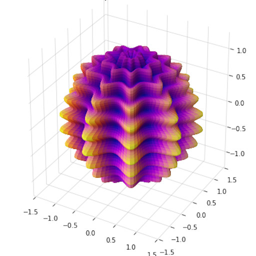
Matplotlib 3D
Examples of 3D visualization using Matplotlib.
view notebook -
Matplotlib Animation
Examples of animated visualization using Matplotlib.
view notebook -
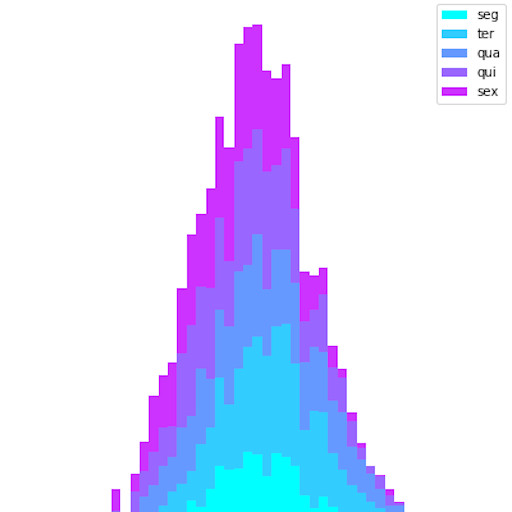
Matplotlib Charts
Examples of chart visualization using Matplotlib.
view notebook -
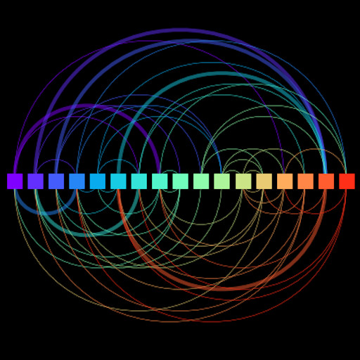
Matplotlib Diagrams
Examples of diagram visualization using Matplotlib.
view notebook -
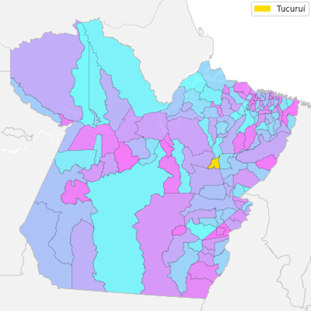
Matplotlib Figures
Examples of figure visualization using Matplotlib.
view notebook